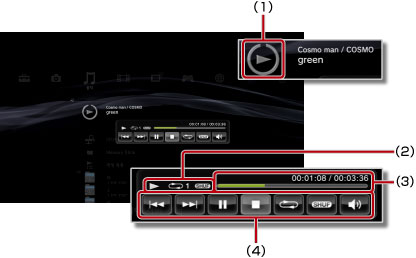

음악 > 미니 제어판 사용하기
미니 제어판 사용하기
음악 재생중에 미니 제어판에서 기본적인 조작을 할 수 있습니다.
1. |
음악 재생중에 PS 버튼을 누릅니다. |
||||||||
|---|---|---|---|---|---|---|---|---|---|
2. |
방향키로 
|
알아두기
- 재생중인 아이콘은
 (음악)의 맨 위에 표시됩니다.
(음악)의 맨 위에 표시됩니다. - 미니 제어판 표시중에
 버튼을 누르면 음악을 재생한 채로 미니 제어판을 지울 수 있습니다.
버튼을 누르면 음악을 재생한 채로 미니 제어판을 지울 수 있습니다.
이전

재생중인 트랙, 또는 이전 트랙의 처음으로 이동합니다.
다음
다음 트랙의 처음으로 이동합니다.
일시정지
재생을 일시정지합니다.
정지
재생을 멈추고 미니 제어판을 닫습니다.
셔플
콘텐츠를 무작위 순서로 재생합니다.
반복
콘텐츠를 반복 재생합니다.  버튼을 누를 때마다 다음과 같이 3단계로 바뀝니다.
버튼을 누를 때마다 다음과 같이 3단계로 바뀝니다.
 |
하나의 콘텐츠를 반복 재생합니다. |
|---|---|
|
모든 콘텐츠를 반복 재생합니다. |
| 표시 없음 | 반복 재생을 해제하고 마지막 콘텐츠까지 순서대로 재생합니다. |
음량 조정
(음악)에서 재생되는 콘텐츠의 음량 출력 레벨을 설정합니다. 9 단계로 조정할 수 있습니다.
알아두기
음량 출력 레벨이 너무 높을 경우 소리가 갈라질 수 있습니다. 이 경우에는 레벨을 낮춰 주십시오.